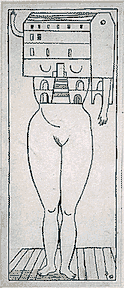

28<----فوريه را روز ملي زن اعلام كرد.
تا سال 1913 زنان كارگر در ايالات متحد آخرين يك شنبه فوريه را به اين مناسبت جشن مي گرفتند. در همان سال 1910 در اثر تلاش هاي زنان سوسياليست، در نشست كپنهاك بين الملل سوسياليست پيشنهاد جهاني كردن اين روز به نشانه به رسميت شناختن مبارزه براي حقوق زنان و در حمايت از حق راي زنان مطرح شد. در دومين كنفرانس جهاني زنان سوسياليست بيش از 100 زن از 17 كشور و از جمله سه زني كه در مجلس فنلاند نماينده شدند، از اين پيشنهاد استقبال كردند.
1911. تریبون آزاد
در نتيجه تصميمي كه در كپنهاك گرفته شده بود روز جهاني زنان در 19 مارس در اتريش، دانمارك، آلمان، و سوييس جشن گرفته شد و بيش از يك ميليون زن و مرد در اين مراسم شركت كردند. علاوه بر حق راي و حق استخدام در ادارات دولتي، زنان حق كار، آموزش براي كار و پايان دادن به تبعيضات در سر كار را درخواست كردند.
واقعا اگر اين روز برگزار نمي شد و به دليل استقبال زياد همگان ثبت نمي شد چه كسي مي دانست كه زن ها در حالي كه كار مي كردند حق كار نداشتند، يعني قانونا حق كار نداشتند؟ درست مثل بچه ها! و اين هر دو گروه – به اضافه مهاجرها و پناهنده ها – قاچاقي كار مي كردند و حداقل دستمزد را مي گرفتند و كارفرما حق بيمه براي آن ها نمي پرداخت، و هر وقت هم كه دلش مي خواست اخراج شان مي كرد. اين البته وضع جديدي نبود و چندين قرن مي شد كه زنان و كودكان كارگر ارزان محسوب مي شدند يا همان طور كه ماركس مي گويد ارتش ذخيره كار. دولت ها هم به اين وضع اعتراضي نداشتند و خيلي هم به آقايان – و احيانا خانم هاي – زميندار و سرمايه دار متشخص احترام مي گذاشتند و هيچ هم در فكر رعايت حقوق زنان و كودكان كارگر نبودند و هيچ هم فكر نمي كردند كه از اين بابت قابل سرزنش هستند. حتي با وجودي كه در آن دوره نيز چنان كه از متون برجاي مانده پيداست همه مي دانستند رئوفت يعني چه و برخورداري از آن را به دوست و آشناي خودشان – درست مثل حالا – دست و دلبازانه نسبت مي دادند. اما وجود اتحاديه هاي كارگري كه فقط مردها عضوش بودند زن ها را حساس كرده بود و به فكر حقوق خودشان انداخته بود. از سال 1903 زن هاي اتحاديه كارگري براي حق راي زنان يك ليگ اتحاديه صنفي زنان را به وجود آوردند.
بنابراين، روز زن از همان آغاز با خودش عزم تغيير اوضاع جهان را به همراه داشت، يعني عزمي را كه در عرف رايج سياسي مي شمرند. و هنوز يك هفته از برگزاري اين نخستين مراسم نگذشته بود، در 25 مارس، كه در كارخانه نساجي نيويوركي تري انگل آتش سوزي اي رخ داد و بيش از 140 دختر كارگر، اكثر مهاجران ايتاليايي و يهودي جانشان را از دست دادند و قضيه واقعا سياسي شد: بي لياقتي دولت در امور مرتبت با وضع قوانين و اجراي آن ها برملا شد. اين واقعه تاثيري جدي روي قوانين كار در ايالات متحد داشت، و شرايط كاري كه منجر به آن فاجعه شده بود پس از آن بارها مورد نقد ناظران بين المللي قرار گرفت.
1914-1913.
به عنوان بخشي از جنبش صلح كه در آستانه جنگ جهاني دوم تشكيل شد، زنان روسي اولين روز جهاني زن خود را در آخرين يك شنبه فوريه 1913 جشن گرفتند. جاهاي ديگر در اروپا، در حدود 8 مارس سال بعد زنان راه پيمايي ها و مراسمي براي اعتراض به جنگ و/يا اعلام همبستگي با خواهران خود بر پا كردند.
1917.
با 2 ميليون سرباز روسي كشته شده در جنگ، زنان روسي باز آخرين يك شنبه ماه فوريه را براي تظاهرات "نان و صلح" خود انتخاب كردند. چهار روز بعد كاخ زمستاني به تسخير مردم درآمد، تزار كناره گيري كرد و دولت موقتي كه تشكيل شد به زنان حق راي داد. اين يك شنبه تاريخي طبق تقويم جوليان كه در آن موقع در روسيه مورد استفاده بود با 23 فوريه مصادف مي شد كه در تقويم گريگوري مورد استفاده در جاهاي ديگر مطابق با 8 مارس بود. اين يك شنبه هنوز هم براي زنان تاريخي است و برخلاف آن هايي كه مهمترين واقعه قرن بيستم را فروپاشي شوروي مي دانند براي مدافعان حقوق زن قيام "نان و صلح" زنان روسي كه باعث بسيج توده هاي مردم و سرنگوني حكومت تزار شد واقعه اي به مراتب مهم تر و ارزنده تر است. اجرای زنده در پارک با حضور جنيس چاپلين و جيمی هندريکس
اين واقعه بعد جديدي به روز جهاني زن در همه كشورهاي جهان داد.
جنبش رو به رشد زنان در جهان، شبكه وسيع مدافعان حقوق زنان، كه هرگز صرفا محدود به دفاع از حقوق زنان نبوده است، ابعاد جديدي در طول قرن بيستم يافت كه بخشي از آن ها براي قرن جديد به ميراث مانده است.
زنان مدام بيشتر به اهميت مبارزه با بي عدالتي و براي اجراي حقوق بشر پي مي برند و روز جهاني زن براي آن ها فرصت ديگري است براي انديشيدن درباره پيشرفت هايي كه در برخي زمينه ها شده ومشكلات جدي كه همه ميراث گذشته اند اما در جهان امروز چنان ابعاد غول آسايي يافته اند كه جامعه بشري را با خطر ويراني كامل رو به رو مي كنند. در مقابل جنگ كه حالا ديگر مدام در چند نقطه جهان در جريان است و خشونت را مدام در جهان بيشتر دامن مي زند، بيماري هاي خطرناكي مانند ايدز، بلاياي طبيعي مانند سيل و زلزله، قحطي، فقر، مهاجرت هاي داخلي و خارجي وعدم امنيت ناشي از همه اين ها كه براي زنان، كودكان و افراد مسن و معلول به مراتب بيش از بقيه است، زنان روز به روز بيشتر به اهميت همبستگي زنانه پي مي برند. و به اهميت دلاوري هاي زنانه اي مانند كار دو زن روستايي افقاني، خيرالنسا و نسرين، كه شروع به جمع آوري بمب هاي هنوز عمل نكرده در روستاي خود كرده اند و در پي پاك سازي كامل اند پي مي برند. به اهميت كار ميليون ها زن معمولي كه در تاريخ دفاع از حقوق زنان نقشي بي نظير داشته اند.
اما در ضمن بخشي از زنان هم به اين چيزها پي نمي برند. درست مثل بخش زيادي از مردان. آيا بايد آرزو كنيم كه در آن ها همدلي رشد كند يا بكوشيم اهميت اين همبستگي را و نقشي را كه در زندگي خود ما بازي كرده براي ديگران توضيح دهيم؟ من كه خيلي به اين چيزها خوش بين نيستم خيال دارم امسال شما را به ياد زناني بيندازم كه به دليل معلوليت گاه از مشاركت اجتماعي ساده هم محروم مي شوند. دفاع از حقوق زناني كه به هر دليل در حاشيه قرار مي گيرند و مشاركت فعال آن ها در جامعه مستلزم تلاش زياد است طبيعتا به عهده آنهايي است كه اين كار را با تلاش كم تري انجام مي دهند. راستش مرسده در اين مورد بايد مي نوشت كه وقت نداشت. در هر حال براي هر توضيح دقيق و درستي در اين زمينه لطفا به خودش مراجعه كنيد.
چرا نباید در انتخابات شرکت کرد؟
چرا باید به جنبش رفراندم پیوست؟
